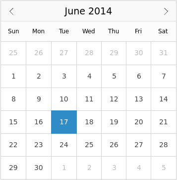

Calendar QML Type
Provides a way to select dates from a calendar. More...
| Import Statement: | import QtQuick.Controls 1.4 |
| Since: | Qt 5.3 |
| Inherits: |
Properties
- dayOfWeekFormat : int
- frameVisible : bool
- locale : var
- maximumDate : date
- minimumDate : date
- navigationBarVisible : bool
- selectedDate : date
- visibleMonth : int
- visibleYear : int
- weekNumbersVisible : bool
Signals
- clicked(date)
- doubleClicked(date)
- hovered(date)
- pressAndHold(date)
- pressed(date)
- released(date)
Methods
- void showNextMonth()
- void showNextYear()
- void showPreviousMonth()
- void showPreviousYear()
Detailed Description

Calendar allows selection of dates from a grid of days, similar to QCalendarWidget.
The dates on the calendar can be selected with the mouse, or navigated with the keyboard.
The selected date can be set through selectedDate. A minimum and maximum date can be set through minimumDate and maximumDate. The earliest minimum date that can be set is 1 January, 1 AD. The latest maximum date that can be set is 25 October, 275759 AD.
Calendar {
minimumDate: new Date(2017, 0, 1)
maximumDate: new Date(2018, 0, 1)
}
The selected date is displayed using the format in the application's default locale.
Week numbers can be displayed by setting the weekNumbersVisible property to true.
Calendar { weekNumbersVisible: true }
You can create a custom appearance for Calendar by assigning a CalendarStyle.
Property Documentation
dayOfWeekFormat : int |
The format in which the days of the week (in the header) are displayed.
Locale.ShortFormat is the default and recommended format, as Locale.NarrowFormat may not be fully supported by each locale (see Locale String Format Types) and Locale.LongFormat may not fit within the header cells.
frameVisible : bool |
This property determines the visibility of the frame surrounding the calendar.
The default value is true.
locale : var |
This property controls the locale that this calendar uses to display itself.
The locale affects how dates and day names are localized, as well as which day is considered the first in a week.
The following example sets an Australian locale:
locale: Qt.locale("en_AU")
The default value is equivalent to Qt.locale().
This property was introduced in QtQuick.Controls 1.6.
maximumDate : date |
The latest date that this calendar will accept.
By default, this property is set to the latest maximum date (25 October, 275759 AD).
minimumDate : date |
The earliest date that this calendar will accept.
By default, this property is set to the earliest minimum date (1 January, 1 AD).
navigationBarVisible : bool |
This property determines the visibility of the navigation bar.
The default value is true.
This property was introduced in QtQuick.Controls 1.3.
selectedDate : date |
The date that has been selected by the user.
This property is subject to the following validation:
- If selectedDate is outside the range of minimumDate and maximumDate, it will be clamped to be within that range.
- selectedDate will not be changed if
undefinedor some other invalid value is assigned. - If there are hours, minutes, seconds or milliseconds set, they will be removed.
The default value is the current date, which is equivalent to:
new Date()
visibleMonth : int |
This property determines which month in visibleYear is shown on the calendar.
The month is from 0 to 11 to be consistent with the JavaScript Date object.
See also visibleYear.
visibleYear : int |
This property determines which year is shown on the calendar.
See also visibleMonth.
weekNumbersVisible : bool |
This property determines the visibility of week numbers.
The default value is false.
Signal Documentation
Emitted when the mouse is clicked on a valid date in the calendar.
date is the date that the mouse was clicked on.
The corresponding handler is onClicked.
Emitted when the mouse is double-clicked on a valid date in the calendar.
date is the date that the mouse was double-clicked on.
The corresponding handler is onDoubleClicked.
Emitted when the mouse hovers over a valid date in the calendar.
date is the date that was hovered over.
The corresponding handler is onHovered.
Emitted when the mouse is pressed and held on a valid date in the calendar.
date is the date that the mouse was pressed on.
The corresponding handler is onPressAndHold.
This signal was introduced in QtQuick.Controls 1.3.
Emitted when the mouse is pressed on a valid date in the calendar.
This is also emitted when dragging the mouse to another date while it is pressed.
date is the date that the mouse was pressed on.
The corresponding handler is onPressed.
Emitted when the mouse is released over a valid date in the calendar.
date is the date that the mouse was released over.
The corresponding handler is onReleased.
Method Documentation
Sets visibleMonth to the next month.
Sets visibleYear to the next year.
Sets visibleMonth to the previous month.
Sets visibleYear to the previous year.